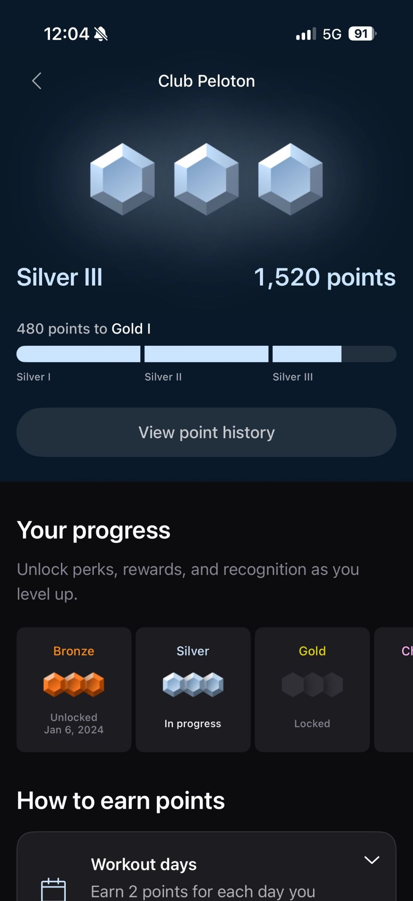
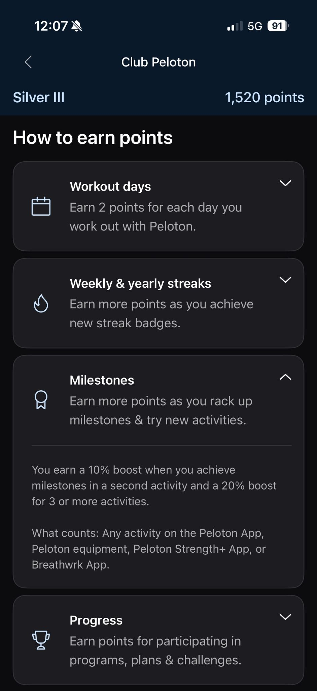
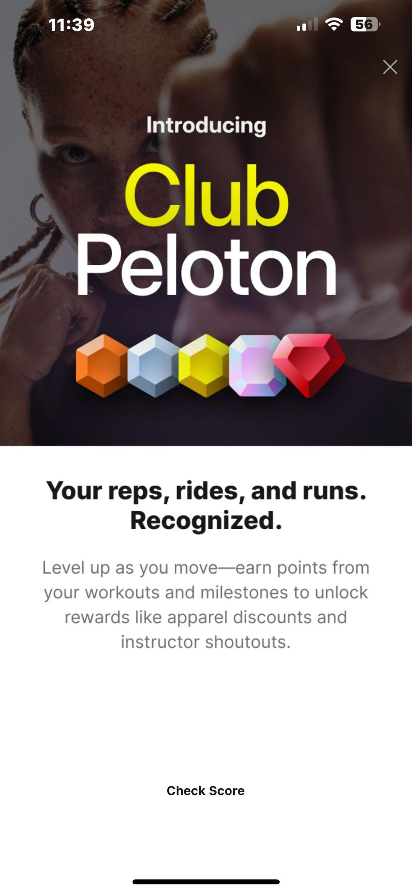

← All case studies
 Habit Formation & Comprehension Research
Habit Formation & Comprehension Research
Club Peloton


01
Context & Background
- Peloton was building its first-ever loyalty program and had no way to know whether members would understand its purpose or how to use it. We needed to proactively identify and address confusion around scoring mechanics, the leveling system, and feature functionality.
- After launch, engagement skewed toward higher-ranked, more active members — raising the question of why lower-ranked and less-active members weren't engaging.

02
The Challenge
Objective 1
How can we ensure a seamless and clear understanding of a member's score for all members from day one?
Objective 2
What are the primary motivations driving engagement and habit formation for lower-tenured, lower-ranked members?
03
Methodology & Goals
Unmoderated Interviews (12)
- Understand discoverability and usability
- Assess initial comprehension
- Evaluate clarity of scoring mechanics and progression
- Gauge motivation and perceived fairness
Attitudinal Survey (3,000)
- Assess member satisfaction across rank and engagement
- Evaluate perceived value and pain points
- Understand behaviors changing due to Club Peloton
- Evaluate strategies to enhance awareness of rewards
04
Timeline
Phase 1
Project Kick-off
- Stakeholder meetings
- Determining method
- Creating research brief
- Gathering stakeholder input
- Designing screeners, survey & unmoderated guide
Phase 2
Conduct Research
- Gathering demographics & list pull from data analytics
- Getting Figma assets from designers
- Launching unmoderated test among 12 members
- Launching survey among 3000 members
Phase 3
Analysis & Deliverable Prep
- Qualitative coding of interviews
- Behaviors, themes & high-impact moments turned into insights
- Mann-Whitney U testing for significance
- Thematic coding of open ends
- Stat-sig testing against demographics
Phase 4
Share Out
- Report created and shared broadly with internal and external teams
- Collaboration with product & design to prioritize and refine features based on recommendations
05
Unmoderated Interview Summary
Insight
Rewards stood out as an incentive, but members lacked clarity on what they'd actually earn as they progressed.
Recommendation
Add concrete examples of rewards at each tier. When rewards update, use it as a moment to reach out and spark renewed interest.
Insight
Fairness concerns stemmed from untracked activities, overexertion, slow point accumulation, and no ability to freeze streaks.
Recommendation
Implement streak freezes as level-up rewards. Notify members of multi-point gains from milestones, and promote tracking of third-party and recovery workouts.
Insight
Participants believed they could earn multiple points a week for high-fives, causing annoyance once they learned otherwise.
Recommendation
Clarify community-point copy so members understand there's a weekly maximum (e.g., "You earn at most 1 point for high-fives each week").
Insight
Members instinctively understood what Club Peloton was and its purpose.
Recommendation
Move forward with the current point structure and rewards — the core concept was received positively.
06
Attitudinal Survey Summary
Insight
Lower-ranked members were more likely to be dissatisfied and confused about their level and how to earn points.
Recommendation
Increase engagement opportunities at every level, and provide more accessible, upfront information about rewards and progression.
Insight
~25% of members reported improved workout behaviors via Club Peloton; the rest focused on other parts of the product.
Recommendation
Offer bonus points for different class types, longer sessions, and recovery classes to drive deeper gamification and habit formation.
Insight
Lower-ranked, less-engaged members were less likely to know Club Peloton offered rewards at all.
Recommendation
Publish the reward matrix and expand the reward catalog based on what lower-ranked, less-engaged members prefer.
Insight
Of the rewards tested, discounts on third-party apparel and pro sporting-event tickets were the most enticing across all members.
Recommendation
Move forward with third-party apparel discounts and professional sporting-event tickets as reward offerings.